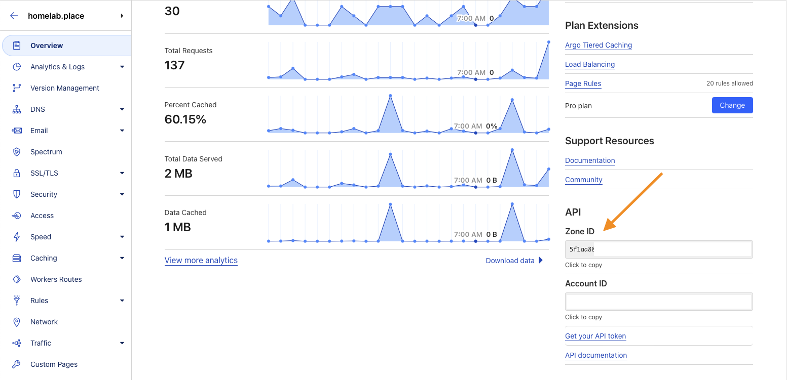
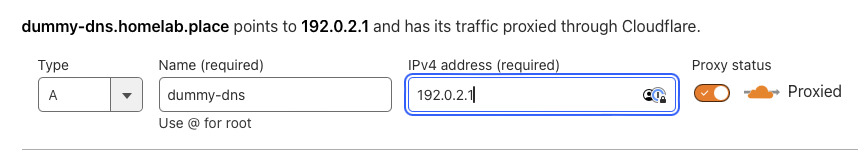
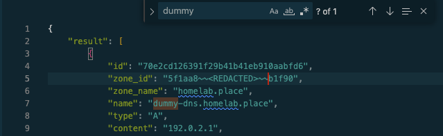

Setting Up Dynamic DNS with curl requests
Note
In this guide, we will be setting up a Bash script on a server to fetch your IP via the Cloudflare /cdn-cgi/trace endpoint, and then using the result in another curl request to the Cloudflare API to update your DNS Record(s).
Note
I can be found on the Homelab Discord as @ramstik. Any questions related to this guide can be sent to me there.
This guide assumes the following:
- You are using a Debian Bookworm LXC Template in Proxmox.
- You have created a non-root user.
sudois installed.- Your created user is in the
sudogroup. apt updatehas been run, and is up to date on packages.
If any of these do not apply, please use your best judgment to adjust as needed to fit your environment.
Prerequisites
- Ensure
curlandripgrepare installedsudo apt install curl ripgrep
Step 1: Obtain an API Token
a) Navigate to the API Tokens page on the Cloudflare Dashboard User Profile page. Link
b) Click the button to Create Token, and select the "Edit zone DNS" template as a base.
c) Click the Pencil icon to the right of Token Name, and give it a descriptive name.
d) Don't add to or remove from the Permissions section.
e) Add your desired Zone to the Zone Resources section.
- Include > Specific zone > homelab.place
f) No other changes need to be made here.
Note
If you wish, you can scope out an Expiration Date for the token, and/or add an IP Address restriction. Upon expiration, or if your IP changes, this Token will need to be edited.
g) Click "Continue to summary" - Verify the information is correct, and then click Create Token.
h) Copy this token to a safe place, and do not give it to anyone as this token can now make DNS edits.
Step 2: Retrieve Zone ID
a) In the Dashboard, return to your Home page. Click into the Zone you wish to configure for Dynamic DNS.
b) At the lower-right of the Overview page, locate the Zone ID, and copy it to a safe place.

Step 3: Create a DNS Record
Note
The record created should have the name you want to actually use. The IP Address will be a temporary dummy IP. You do not need to set the Proxy option now, as I will explain later how to have the script do this for you.
a) In the Cloudflare Dashboard, go to the DNS Records page
b) Create a new DNS Record.
- Name: your desired, usable hostname
- IPv4 Address: 192.0.2.1
- Save

Step 4: Retrieve DNS Record ID via API
Now we're getting into the API stuff. We will be using the Cloudflare API to get the DNS Record ID for the record we just created.
a) Copy this code to your preferred text editor:
curl -X GET \
--url https://api.cloudflare.com/client/v4/zones/<ZONE_ID>/dns_records \
--header 'Content-Type: application/json' \
--header 'Authorization: Bearer <DNS:EDIT_TOKEN>' \
b) Replace the values as follows:
<ZONE_ID>: Replace with your retrieved Zone ID from Step 2<DNS:EDIT_TOKEN>: Replace with the API Token you generated in Step 1
c) Once you have the formatted command, copy+paste it to a Terminal and run it.
Note
If everything was done right, the command should have returned a mess of JSON data.
Copy and paste the JSON data to a text editor that supports "pretty JSON" if you prefer.
VS Code is good for this. You can paste the data, then right-click and use "Format Document".
d) Run a search for the DNS Record name you created:

Note the id field. Copy this to your document for later usage.
Step 5: Formatting the curl script
Now that you have an API Token, a Zone ID, and a DNS Record ID, you can format the following cURL script:
#!/usr/bin/env bash
touch known-ip.txt
IP=$(curl -s4 https://cloudflare.com/cdn-cgi/trace | rg -r '$1' 'ip=(.+)')
KNOWN=$(< known-ip.txt)
if [ "$IP" != "$KNOWN" ]; then
echo "$IP" > known-ip.txt
curl -X PUT \
--url https://api.cloudflare.com/client/v4/zones/ZONE_ID/dns_records/DNS_REC_ID \
--header 'Content-Type: application/json' \
--header 'Authorization: Bearer DNS:EDIT_TOKEN' \
--data "{\"content\": \"$IP\", \"name\": \"DNS_REC_NAME\", \"proxied\": true, \"type\": \"A\", \"comment\": \"Updated by ME on $(date).\", \"ttl\": 1}"
fi
Replace the following values:
- ZONE_ID in the URL
- DNS_REC_ID in the URL
- ZONE:EDIT_TOKEN in the second
--headerline - DNS_REC_NAME in the
--dataline
Note
Optionally, change the Note in the Comment section. This creates a Comment on the record in Cloudflare.
In its current format, it simply adds a modification date to the record.
Be careful to not remove any quotes or escape characters marked with ^
\"Updated by ME on $(date).\",
^^ ^^
Script Description
touch known-ip.txtwill create the file that the IP will be stored in for comparison in the script.- The first
curl -s4requests uses https://cloudflare.com/cdn-cgi/trace to retrieve your IP and saves it to a variable. - The
ifscript will check to see if the IP is known. If the IP is not known or theknown-ip.txtdoes not exist, it will create the file, or update the IP if the file does exist. - The second
curl -X PUTrequest will use the IP from the file, with the values you gave it, and update the DNS Record.
Changing Proxy Behavior
The Cloudflare Proxy can be set here as well. On the --data line, there are two values that need to be edited.
-
To disable the Proxy, set
\"proxied\": false,and\"ttl\": 300}"- You can use a longer or shorter value instead of 300. This is in seconds.
-
To enable/re-enable the Proxy, set
\"proxied\": true,and\"ttl\": 1}"- TTL must equal 1.
Example Script
This is a working, redacted example with no placeholders.
#!/usr/bin/env bash
touch known-ip.txt
IP=$(curl -s4 https://cloudflare.com/cdn-cgi/trace | rg -r '$1' 'ip=(.+)')
KNOWN=$(< known-ip.txt)
if [ "$IP" != "$KNOWN" ]; then
echo "$IP" > known-ip.txt
curl -X PUT \
--url https://api.cloudflare.com/client/v4/zones/5f1aa8~~<REDACTED>~~b1f90/dns_records/70e2cd126391f29b41b41eb910aabfd6 \
--header 'Content-Type: application/json' \
--header 'Authorization: Bearer KJBn~~<REDACTED>~~gxQU' \
--data "{\"content\": \"$IP\", \"name\": \"dummy-dns.homelab.place\", \"proxied\": true, \"type\": \"A\", \"comment\": \"Updated by ME on $(date).\", \"ttl\": 1}"
fi
Running the script
Copy the finalized curl request to a terminal and run it.
Expected Response
You should receive JSON feedback for what was changed, along with the value "success": true near the end of the output. If this is seen, the script was successful, and you can proceed to set it up in crontab to run automatically.
Running automatically with crontab
This script can be placed into crontab to run automatically:
*/5 * * * * /usr/bin/bash /path/to/script.sh
Feel free to use any other system to run this on a schedule.